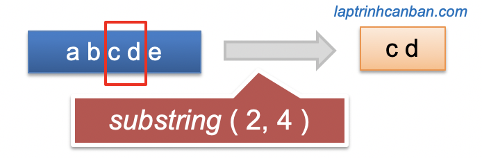

Hướng dẫn sử dụng javascript substring để cắt chuỗi trong JavaScript. Chúng ta sử dụng cả phương thức substring() lẫn slice() để cắt chuỗi trong JavaScript mà không làm thay đổi chuỗi ban đầu. Hai phương thức này có cách hoạt động phần lớn là giống nhau, và chỉ khác nhau khi chỉ định giá trị index làm phạm vi cắt mà thôi. Về slice() thì chúng ta đã học ở bài trước rồi và trong bài này, ngoài việc học được cách sử dụng javascript substring thì chúng ta cũng sẽ làm rõ sự khác nhau của 2 phương pháp này trong bài học này.
- Xem thêm: Cắt chuỗi trong JavaScript (slice)
Cắt chuỗi tại phạm vi chỉ định trong JavaScript bằng phương thức substring()
Chúng ta cắt chuỗi trong JavaScript bằng cách sử dụng javascript substring để copy một phạm vi cần cắt ra từ chuỗi ban đầu và thu về kết quả dưới dạng một chuỗi mới. Phép cắt này không làm thay đổi chuỗi ban đầu.

Chúng ta chỉ định phạm vi chuỗi con cần cắt ra từ chuỗi ban đầu làm đối số của phương thức substring() với cú pháp sau đây:
string.substring( index bắt đầu , index kết thúc )
Trong đó:
stringlà chuỗi ban đầuindex bắt đầuvàindex kết thúclà phạm vi chuỗi cần cắt từ trong chuỗi ban đầu
Cú pháp và cách sử dụng của substring() khá giống với slice(). Chúng ta cũng có thể sử dụng cả các giá trị index âm lẫn index dương để chỉ định index bắt đầu và index kết thúc.
Tuy nhiên cần chú ý là khác với phương thức slice() thì các giá trị index chỉ định nếu nhỏ hơn 0 (index âm) hoặc lớn hơn str.length (vượt quá độ dài chuỗi) thì đều được chuyển thành giá trị mặc định là bằng 0.
Chúng ta cũng có thể lược bỏ 2 đối số index bắt đầu và index kết thúc. Nếu đối số index bắt đầu được rút gọn thì JavaScript sẽ mặc định coi nó bằng 0, và nếu index kết thúc được rút gọn thì JavaScript sẽ mặc định coi nó bằng độ dài chuỗi ban đầu (tính bằng str.length).
Lại nữa, phương thức substring() sẽ trả về một chuỗi mới có phạm vi từ ký tại index bắt đầu cho đến ký tự ở phía trước index kết thúc. Nói cách khác thì ký tự tại index kết thúc sẽ không bao gồm trong kết quả phép cắt. Ví dụ cụ thể:
const str = "abc123"; |
Bạn có thể thấy ký tự tại vị trí index kết thúc sẽ không nằm trong kết quả trả về rồi phải không nào.
Và do chuỗi con được cắt ra không bao gồm ký tự ở index kết thúc, nên nếu muốn lấy cả ký tự tại index kết thúc thì khi chỉ định index kết thúc, chúng ta cần cộng thêm 1 đơn vị vào index kết thúc đó.
Sau đây, chúng ta sẽ cùng xem các cách sử dụng nâng cao để cắt chuỗi trong JavaScript bằng phương thức substring() nhé.
Cắt chuỗi trong JavaScript bằng phương thức substring() rút gọn
Rút gọn tất cả đối số
Chúng ta có thể lược bỏ cả 2 đối số index bắt đầu và index kết thúc để sử dụng phương thức substring() rút gọn với cú pháp sau đây:
string.substring()
Ví dụ:
const str = "abc123"; |
Do 2 đối số này được rút gọn nên JavaScript sẽ mặc định coi index bắt đầu = 0 , và index kết thúc = độ dài chuỗi.
Khi đó JavaScript sẽ hiểu phép cắt ở trên tương tự như sau:
const str = "abc123"; |
Kết quả là chuỗi được cắt ra sẽ được cắt từ đầu đến cuối chuỗi ban đầu, khiến kết quả thu về sẽ bằng chính với chuỗi ban đầu như ở trên.
Rút gọn index kết thúc
Chúng ta cũng có thể lược bỏ đối số index kết thúc để và chỉ giữ lại index bắt đầu khi sử dụng phương thức substring() với cú pháp sau đây:
string.substring( index bắt đầu )
Khi lược bỏ index kết thúc, về mặc định thì JavaScript sẽ tự coi index kết thúc lúc này bằng chính độ dài của chuỗi (tính bằng string.length).
Ví dụ cụ thể:
const str = "abc123"; |
Lưu ý là chúng ta có thể lược bỏ index kết thúc hoặc là lược bỏ cùng lúc cả index bắt đầu và index kết thúc, tuy nhiên chúng ta không thể lược bỏ chỉ index bắt đầu khi sử dụng phương thức substring() để cắt chuỗi trong JavaScript.
Cắt chuỗi trong JavaScript bằng phương thức substring() với index âm hoặc index lớn hơn str.length
Chúng ta có thể sử dụng index âm để chỉ định các đối số index bắt đầu và index kết thúc. Nếu chỉ định chúng bằng giá trị âm thì chúng sẽ được chuyển sang giá trị mặc định bằng 0.
Tương tự thì nếu chúng ta chỉ định index bởi một giá trị lớn hơn str.length (nằm ngoài phạm vi index của chuỗi) thì index này cũng sẽ được chuyển sang giá trị mặc định bằng 0.
Ví dụ, chúng ta chỉ định index bắt đầu bằng một giá trị index âm như sau:
const str = "abc123"; |
Tương tự, chúng ta cũng có thể chỉ định index kết thúc bằng giá trị âm như sau:
const str = "abc123"; |
Hoặc là khi rút gọn index bắt đầu và chỉ định index kết thúc bằng giá trị lớn hơn str.length thì một chuỗi trống cũng được trả về.
const str = "abc123"; |
Lưu ý là khi chỉ định index bắt đầu là một số dương và index kết thúc là một số âm thì kết quả sẽ không phải là một chuỗi trống như ở trên.
const str = "abc123"; |
Tương tự khi chúng ta không rút gọn index bắt đầu và chỉ định một index lớn hơn str.length thì kết quả trả về cũng không phải là một chuỗi trống.
const str = "abc123"; |
Lý do là sau khi chuyển index thành giá trị 0 như trên thì phép cắt lúc này sẽ chuyển sang trường hợp khi mà index bắt đầu lại nhỏ hơn index kết thúc), và chúng ta sẽ cùng làm rõ trường hợp này ngay sau đây.
Cắt chuỗi trong JavaScript bằng phương thức substring() khi index bắt đầu nhỏ hơn index kết thúc
Trong trường hợp chỉ định index bắt đầu nhỏ hơn index kết thúc, hoặc là khi 2 index này bằng nhau, giá trị 2 index này sẽ được hoán đổi cho nhau và tiếp tục thực hiện phép cắt chuỗi trong JavaScript.
Ví dụ cụ thể:
let prog = 'JavaScript'; |
Sự khác biệt giữa substring() và slice() trong JavaScript
Thông qua các bài phân tích của Kiyoshi về substring() và slice() thì chúng ta có thể nhận thấy ở chúng có khá nhiều điểm tương đồng. Chúng đều được sử dụng để cắt một phạm vi từ trong chuỗi JavaScript mà không làm thay đổi chuỗi ban đầu. Và cú pháp cũng như cách sử dụng của chúng tương đối là giống nhau.
Tuy nhiên ở giữa chúng vẫn có những sự khác biệt nhất định trong việc chỉ định giá trị index. Sự khác biệt giữa substring() và slice() trong JavaScript có thể được khái quát như sau:
Với index âm, slice() sẽ chuyển nó về dạng
str.length + index), còn javascript string sẽ chuyển nó thành giá trị mặc định bằng0. Ví dụ:console.log(str.slice(-2, 5)); //Tương đương str.slice(5 + (-2), 5) => str.slice(3,5)
//> 2
console.log(str.substring(-2, 5)); //Tương đương substring.slice(0, 5)
//> abc12Với index vượt quá phạm vi index của chuỗi (lớn hơn cả độ dài chuỗi ban đầu) thì slice() sẽ chuyển nó về dạng
str.length, còn javascript substring sẽ chuyển nó thành giá trị mặc định bằng0. Ví dụ:const str = "abc123";
console.log(str.slice(2, 100)); //Tương đương str.slice(2, str.length) => str.slice(2,6)
//> c123
console.log(str.substring(2, 100)); //Tương đương str.substring(2, 0) => str.substring(0, 2)
//> c123Với index bắt đầu lớn hơn index kết thúc thì slice() sẽ trả về chuỗi trống, trong khi substring() sẽ hoán đổi 2 giá trị này. Ví dụ:
const str = "abc123";
console.log(str.slice(5, 2)); //trả về chuỗi trống
//>
console.log(str.substring(5, 2)); //Tương đương str.substring(2, 5)
//> c12
- Xem thêm: Cắt chuỗi trong JavaScript (slice)
Ứng dụng javascript substring để thay thế ký tự trong chuỗi JavaScript
Mặc dù Kiyoshi đã giới thiệu các cách tốt nhất để thay thế ký tự trong chuỗi JavaScript bằng phương thức replace() trong bài viết Thay thế ký tự trong chuỗi JavaScript (replace) rồi, tuy nhiên thì bằng cách ứng dụng substring() thì chúng có thêm một lựa chọn nữa để thực hiện việc này.
Ý tưởng ở đây đó là, chúng ta sử dụng substring để cắt chuỗi ban đầu thành 2 phần, 1 phần là từ đầu tới vị trí ký tự cần thay thế và phần còn lại là từ vị trí ký tự cần thay thế đến cuối chuỗi ban đầu. Sau đó thì nối 2 chuỗi đó lại cùng với ký tự thay thế ở giữa chúng là xong.
Để tìm ra vị trí của ký tự cần thay thế trong chuỗi ban đầu, chúng ta có thể sử dụng vòng lặp for, hoặc các phương thức có sẵn khác như indexOf() hoặc là lastIndexOf().
Ví dụ, chúng ta có thể thay thế dấu gạch dưới cuối cùng trong chuỗi JavaScript bằng substring() như sau:
let str = "a_b_c_d_" |
Hoặc là sử dụng một vòng lặp for để tìm ra vị trí ký tự cần so sánh để thay thế nó, giống như ví dụ sử dụng tại developer.mozilla như sau:
function replaceString(oldS, newS, fullS, n) { |
Tổng kết
Trên đây Kiyoshi đã hướng dẫn bạn cách tính cắt chuỗi trong JavaScript bằng phương thức substring() rồi. Để nắm rõ nội dung bài học hơn, bạn hãy thực hành viết lại các ví dụ của ngày hôm nay nhé.
Và hãy cùng tìm hiểu những kiến thức sâu hơn về JavaScript trong các bài học tiếp theo.
URL Link
HOME › học javascript - lập trình javascript cơ bản>>02. chuỗi trong javascript